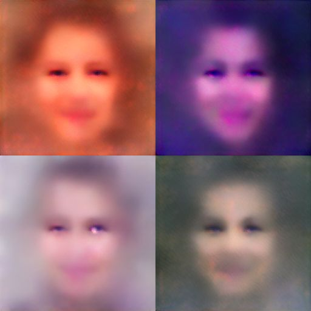
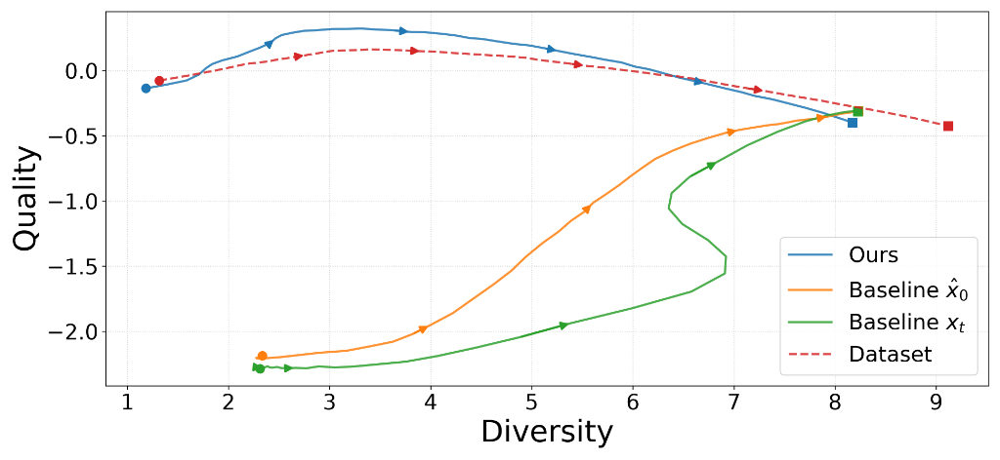

Standard diffusion denoising trajectories pass through corrupted, unrecognizable intermediate states. We distill generation into a variation-reducing reverse process that preserves recognizable images on the data manifold at every single step—enabling early termination and a controllable speed–variation trade-off.
Figure 2: Method Overview. (a) Generate images with a pretrained LDM, select a prototype, and construct variation-reducing trajectories using image morphing. (b) Train a network conditioned on timestep and initial noise to distill the reverse diversification process. (c) Inference loop generating diverse samples from a prototype.
Instead of corrupting images into random Gaussian noise, our degradation contracts diverse images toward a shared prototype while keeping all intermediate states strictly on the image manifold.
Because manifold traversal lacks a simple closed form, we leverage generative-prior image morphing to map smooth, semantically continuous trajectories between prototype and target samples.
To resolve the one-to-many mapping in the reverse diversification direction, each trajectory is associated with an initial noise latent and perturbed to prevent error accumulation.
Inference can be terminated at any intermediate step. Stopping early yields high-quality recognizable images in fewer steps, allowing flexible trading between generation speed and sample diversity.
Compare intermediate generation states across timesteps (Steps 1 → 50). Watch the auto-slide or manually drag the slider!


@inproceedings{seripanitkarn2026speed,
title = {Speed-Variation Distillation for Generative Modeling},
author = {Seripanitkarn, Sukit and Tawatdamrongkrit, Phonphrm and Suwajanakorn, Supasorn},
booktitle = {Proceedings of the European Conference on Computer Vision (ECCV)},
year = {2026}
}